Deluxe room
After a day outdoors you slip into your own sauna and the tiredness slowly fades away.
- 25 m²
- Double bed or twin beds
- Infrared sauna
- Max. 2 people
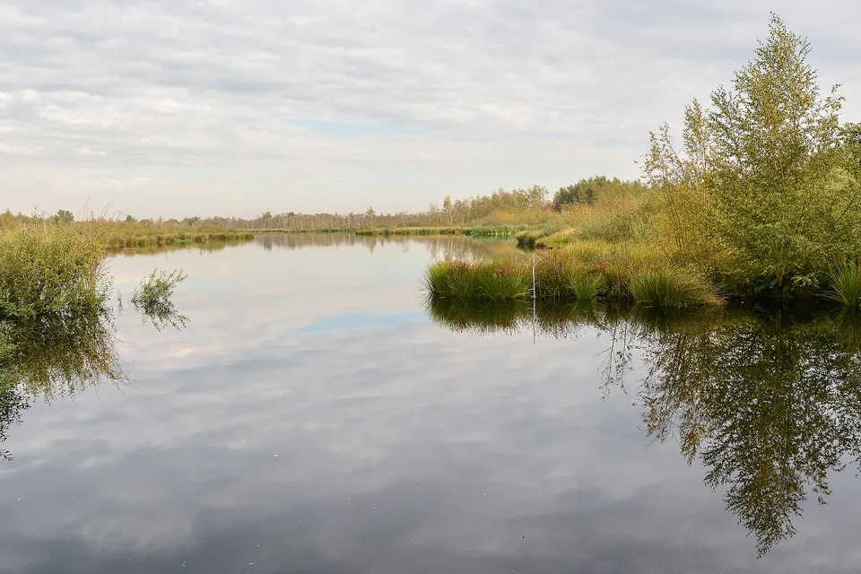
Nature
Raised bog, fens and boardwalks in a national park on the border of Limburg and Brabant, a 43-minute drive from your hotel room.
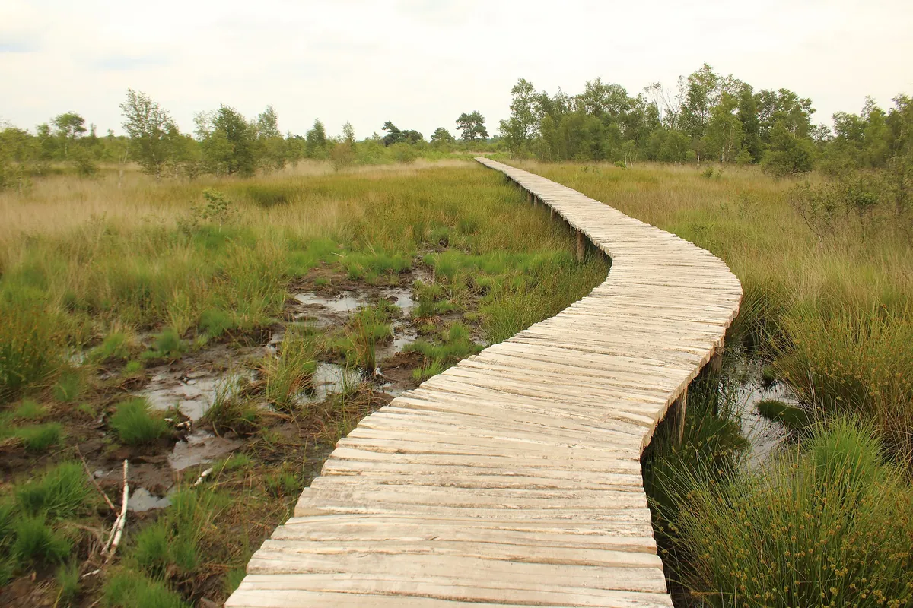
De Groote Peel National Park near Ospel is a 43-minute drive from Hotel Asteria. Peel means marshy place, and you see why straight away: between the birches and purple moor grass lie fens and pools, and across the wet stretches you walk on boardwalks, raised paths made of tree trunks.
This was once a vast raised bog that was almost impossible to cross. Most of the peat disappeared as turf, 'the gold of the Peel', into ovens and stoves. What remained has been a national park since 1993 and is internationally recognised as a wetland. When the water is low you can still spot peelpuisten: fossil tree stumps rising out of the peat.
About De Pelen at Staatsbosbeheer (Dutch) (opens in a new tab)
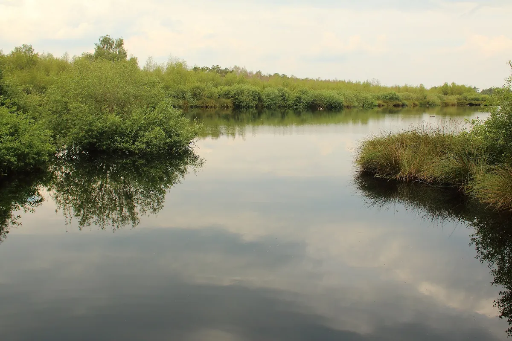
The quiet draws more than a hundred breeding bird species, such as the bluethroat, the stonechat and the yellowhammer. In spring and autumn migrating birds stop to rest, and with a bit of luck you will hear the trumpeting of cranes. Along the yellow family trail there is a bird hide and a lookout tower.
In autumn the mist hangs low over the bog and the landscape turns red, brown and gold. In winter it is above all quiet and wide open here, and you feel how big the raised bog really is.
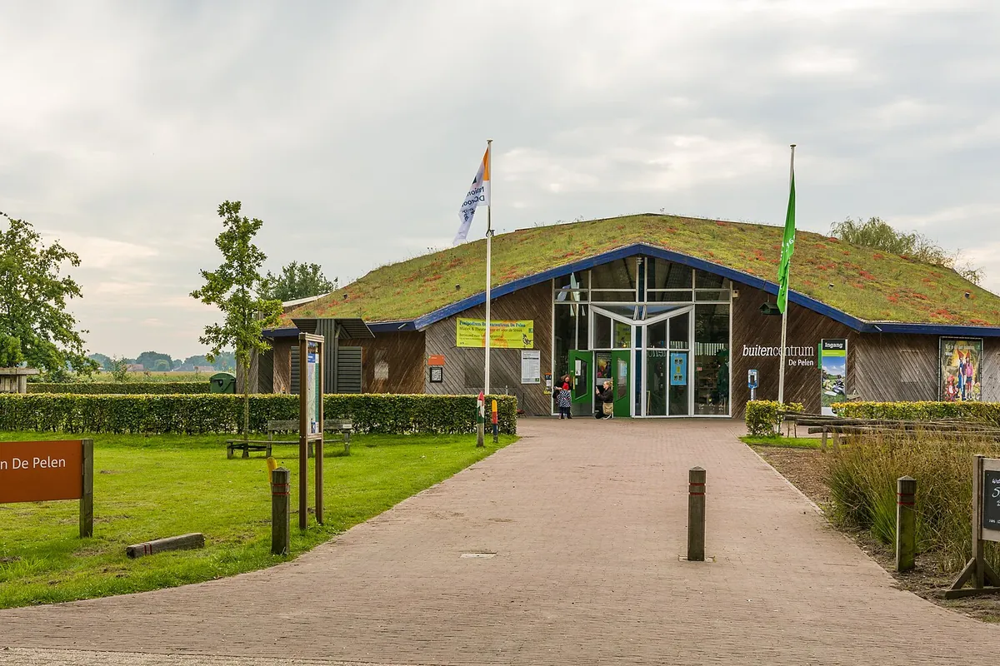
You start at the Buitencentrum De Pelen visitor centre in Ospel, opposite the park entrance. You park there for free, pick up a trail map at the desk and have a coffee or lunch at the Peelkiosk. From here the waymarked trails of 2, 3 and 6 kilometres set off. For a view over the area, drive to the Belfort Vossenberg near Meijel: a 22-metre tower next to six Second World War bunkers, with a walking trail that is open all year.
Come in the morning, park at the visitor centre and walk the blue trail of 6 kilometres: it stays open even when parts of the park are closed for the birds. Then have lunch at the Peelkiosk. Wear waterproof shoes, as the paths can be wet, and in winter do not go on a Monday: the visitor centre and the Peelkiosk are both closed then.
Reception team, Hotel Asteria
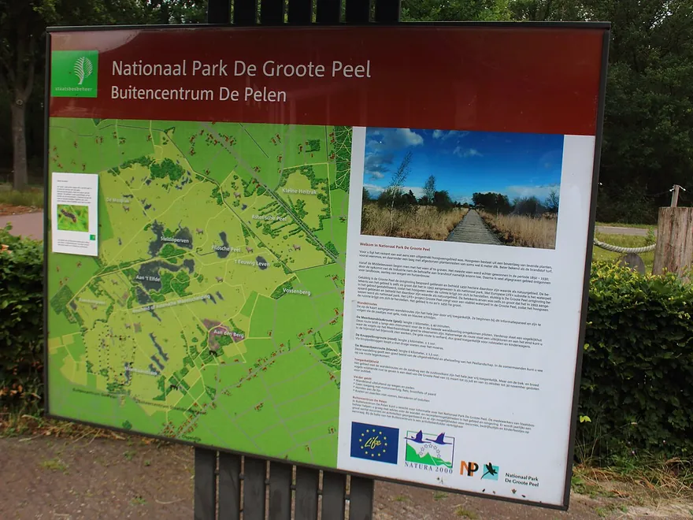
From November to March inclusive, Wednesday to Sunday 10 am to 5 pm, with the Peelkiosk also open on Tuesdays in winter. From April to October inclusive, every day.
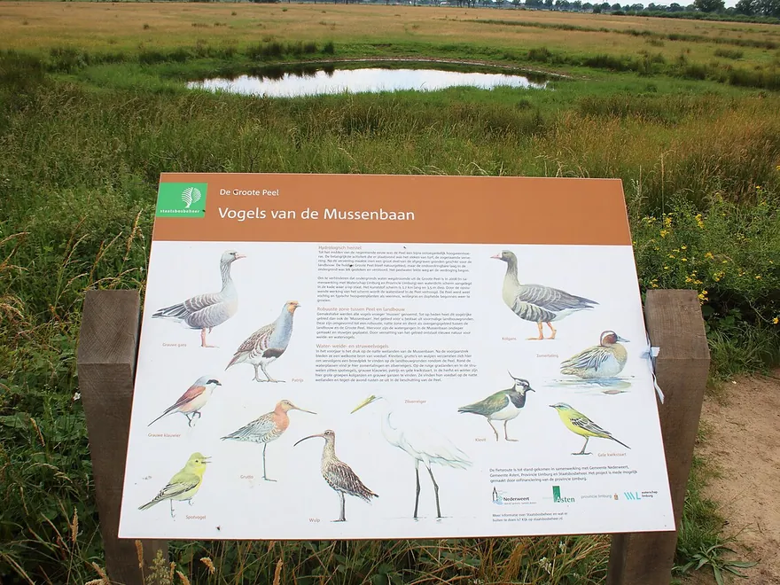
From 15 March to 15 July inclusive and from 15 October to 30 November inclusive, parts are closed. The 2, 3 and 6 km trails stay open.
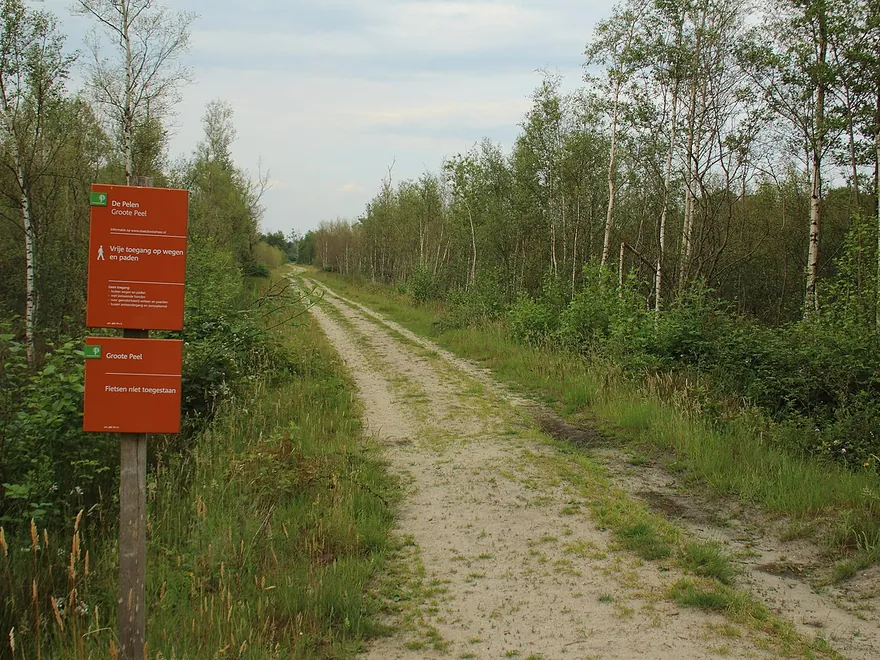
Large car park at Buitencentrum De Pelen, Moostdijk 15 in Ospel.
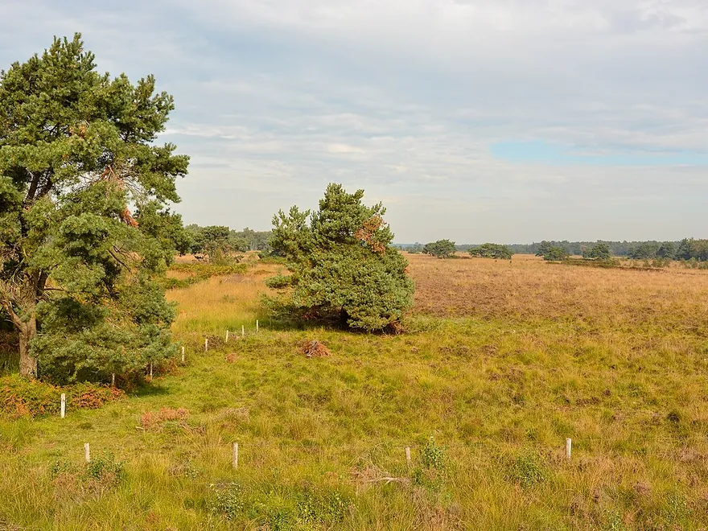
Welcome, but on a lead. Bring a poo bag: there are no bins in the park.
Photos: FrDr (CC BY-SA 4.0), FrDr (CC BY-SA 4.0), FrDr (CC BY-SA 4.0) and Tuxyso (CC BY-SA 3.0), cropped; via Wikimedia Commons.

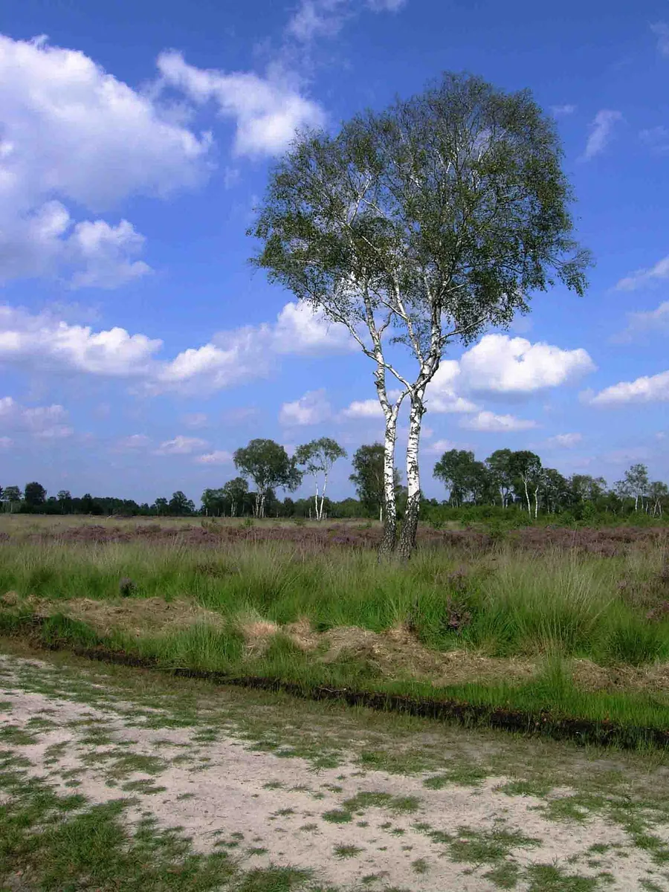


Breakfast at the hotel, a walk in De Groote Peel during the day and back in the late afternoon for the sauna and dinner.
The breakfast buffet is served from 7 to 10 am on weekdays and from 8 to 10.30 am at weekends. The visitor centre opens at 10 am and is a 43-minute drive away, so after breakfast you will be there in good time for a morning walk.
Walk the blue trail of 6 kilometres over boardwalks and past fens, and have lunch at the Peelkiosk by the visitor centre. Plan your walk in good time: the park is open from sunrise to sunset.
Back in Venray, warm up in the sauna. The wellness area is open Monday to Thursday from 4 pm to 10 pm and Friday to Sunday from 12 noon to 10 pm. Tuesday is swimwear day.
End the day at a table in the hotel brasserie. The kitchen is open until 9.30 pm, and afterwards your room is just a lift ride away.
Birch photo: Dirk van der Made (CC BY 1.0), cropped; via Wikimedia Commons.
After a day outdoors, the sauna and dinner, there is no need to drive home. Choose your room; you will see the price for your dates straight away when you book.
After a day outdoors you slip into your own sauna and the tiredness slowly fades away.
For travellers who mainly want a good night's sleep. In the morning you head out again well rested.
A weekend away, with time to unpack your suitcase and simply be there for a while.
To celebrate an anniversary or birthday, with a night you will still be talking about later.
After the big day, or simply an evening for the two of you: run the bath and unwind.
Travelling as a three? Then you end the evening together in one room.
Designed for guests in a wheelchair, with extra wide doors and an adapted bathroom.
De Groote Peel lies near Ospel, south-west of Venray on the border with Brabant. The map also shows three other outings you can combine on the way or nearby.
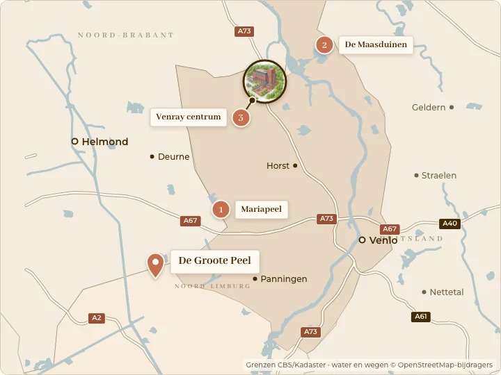
Buitencentrum De Pelen, Moostdijk 15, 6035 RB Ospel
To Buitencentrum De Pelen in Ospel, the starting point of the walking trails, it is 49 kilometres, about 43 minutes by car. Parking at the visitor centre is free, just as it is at Hotel Asteria.
From 15 March to 15 July inclusive and from 15 October to 30 November inclusive, parts of the park are closed to give the birds some peace. The waymarked trails of 2 km (yellow), 3 km (red) and 6 km (blue) stay open, as does the 7 km trail through the Paardenbegrazing (horse grazing area); you can pick up its map at the visitor centre. The trail from the Belfort Vossenberg is open all year. Check the signs at the entrance when you arrive.
From April to October inclusive, every day from 10 am to 5 pm. From November to March inclusive, the desk and the shop are open Wednesday to Sunday from 10 am to 5 pm; the Peelkiosk is also open on Tuesdays in the winter months. During the Dutch spring half-term (voorjaarsvakantie) the visitor centre is open every day. The park itself is open from sunrise to sunset.
Yes. The yellow family trail of 2 kilometres starts at the visitor centre. It is paved and suitable for wheelchairs, mobility scooters and pushchairs, and the bird hide and lookout tower along this trail are wheelchair accessible. You can borrow a wheelchair at the visitor centre. The other trails are fairly manageable in dry weather, but you will need help at the boardwalks.
Dogs are welcome, but only on a lead. Cycling is not allowed in the nature reserve, except on the Mussenbaan cycle path on the east side (junction 94 to 5) and on the south side (junction 7 to 8).
Yes. You are back in Venray in three quarters of an hour. The wellness area is open Monday to Thursday from 4 pm to 10 pm and Friday to Sunday from 12 noon to 10 pm. Tuesday is swimwear day. You can have dinner in the brasserie until 9.30 pm.
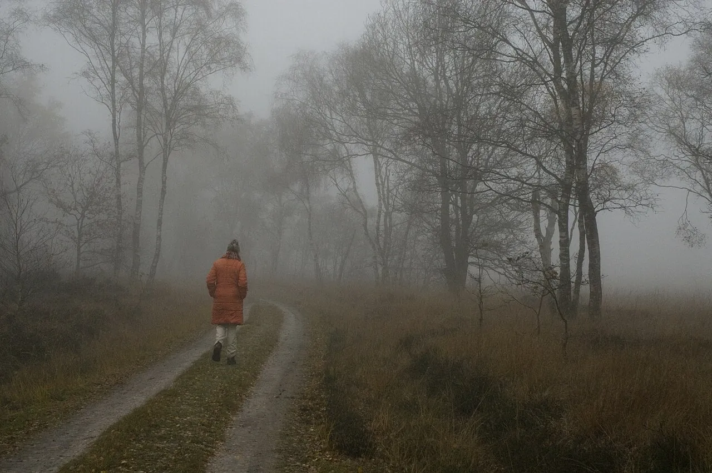
NatureMariapeel29 min by carFind out more NatureDe Maasduinen National Park15 min by carFind out more
NatureDe Maasduinen National Park15 min by carFind out more  Town centreVenray town centre7 min by carFind out more
Town centreVenray town centre7 min by carFind out more Photos: Jan van der Straaten, Saxifraga (CC BY-SA 3.0), Lieblingsgouda (CC BY-SA 3.0 NL), Dosseman (CC BY-SA 4.0), cropped; via Wikimedia Commons.
Hero photo: Tuxyso (CC BY-SA 3.0), cropped; via Wikimedia Commons.

Three quarters of an hour from De Groote Peel, your room, the wellness area on the Top Floor and a table in the brasserie are waiting for you.
Book your stay